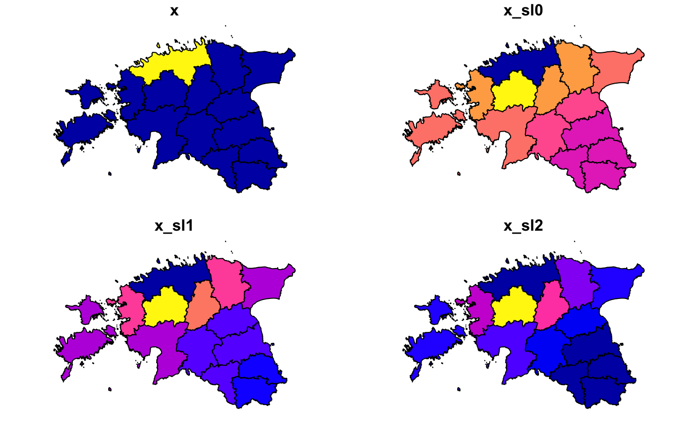

The goal of wcshapes is to make spatial lagging with country-year but also other panel data easier.
NOTE: EVEN MINIMAL CORE FUNCTIONALITY IS IN PLACE YET; NOT READY FOR USE
Installation
library("remotes")
install_github("andybega/wstates")NOPE NOT YET:
You can install the released version of wstates from CRAN with:
install.packages("wstates")Example
library("wstates")
library("sf")
#> Linking to GEOS 3.6.1, GDAL 2.1.3, PROJ 4.9.3
library("ggplot2")
data("est_adm1")
est_adm1$x <- as.integer(est_adm1$NAME_1 == "Harju")
w0 <- w_dist_power(st_geometry(est_adm1), alpha = .5)
w1 <- w_dist_power(st_geometry(est_adm1), alpha = 1)
w2 <- w_dist_power(st_geometry(est_adm1), alpha = 2)
est_adm1$x_sl0 <- as.numeric(w0 %*% est_adm1$x)
est_adm1$x_sl1 <- as.numeric(w1 %*% est_adm1$x)
est_adm1$x_sl2 <- as.numeric(w2 %*% est_adm1$x)
plot(est_adm1[, c("x", "x_sl0", "x_sl1", "x_sl2")])